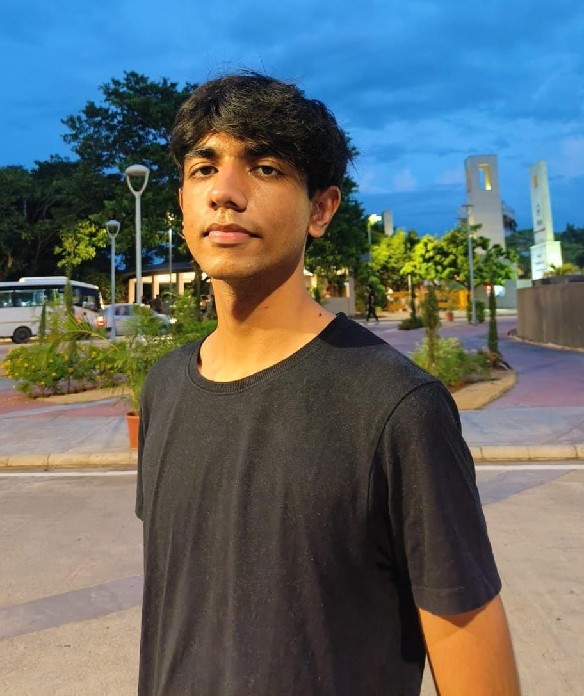

Farhaan Khan
Software engineer. AI agents, full-stack products and computer vision, built to hold up in production.
Background
I'm a software developer at Alfaleus Tech, an ophthalmology med-tech startup, and I also build Reznt, an AI agent platform, with Azntai. I graduated in computer science from VIT Vellore in 2026, with a research background in quantum-hybrid machine learning. My work so far spans AI agents, med-tech and AR/VR, and all of it taught the same lesson: a model only matters if the engineering around it holds.
I'm drawn to problems sitting at the edge of what is computationally feasible. Sometimes that means squeezing accuracy out of a deepfake detector using quantum feature selection. Sometimes it means getting Bluetooth to behave in the background on iOS so a glaucoma patient's eye drops actually get logged.
Away from code I'm reading about quantum algorithms, contributing to open-source tooling, or grinding my LeetCode rating.

Published research
IEEE Access / Volume 14 / 2026
A Quantum-Hybrid Framework for Enhanced Deepfake Detection
Integrating QAOA-Based Feature Selection with Quantum-Inspired Attention Mechanisms
A hybrid quantum-classical architecture for video deepfake detection. QAOA-based feature selection combined with quantum-inspired attention raised detection accuracy by 2.5 percentage points over classical baselines on FaceForensics++, and cut model calibration error by 45%. The framework outperformed baselines across both FaceForensics++ and DFDC.
Experience
Software Engineer, Reznt
Azntai, AI agents
Top contributor (355 of 738 commits, 142 merged PRs) to Reznt, a multi-tenant AI revenue agent used by paying clients. It sells, takes orders and recovers missed calls across WhatsApp, Instagram, Facebook and phone. Next.js, TypeScript, PostgreSQL, DBOS durable workflows and the Vercel AI SDK, with work across provider routing, evals and hybrid search.
Software Developer
Alfaleus Tech, med-tech
Built much of Droptor, a Bluetooth smart cap that tracks glaucoma eye-drop adherence: the Flutter patient app and the Next.js doctor dashboard. It won 1st prize at the Glaucoma Society of India Hackathon 2026 and is live on the Play Store and App Store. Also built VisioVR solo, an Android phone-VR simulator of 12 eye conditions that took 2nd prize at the same event, plus the internal HR platform, and I mentor the intern team.
Software Developer Intern
Alfaleus Tech, med-tech
Led backend development for an internal platform in Flask and PostgreSQL supporting three production tools, working across four teams on system integration and architecture decisions.
Computer Vision Research Intern
Imaginate XR, AR and VR simulation
Optimized a 3D reconstruction data pipeline with OpenCV and PyTorch, cutting rendering latency by 30%.
Selected work
Six projects
Droptor 1st prize, GSI Hackathon 2026
A smart cap for eye-drop bottles. Every squeeze is logged over Bluetooth, the app checks it against the dosing schedule, and the doctor sees real adherence on a live dashboard. Offline-first Flutter app with reliable background BLE on iOS, live on the Play Store and App Store.
Reznt with Azntai
A multi-tenant AI agent that real businesses run with their customers on WhatsApp, Instagram and phone: it answers from each business's own catalog, takes orders and recovers missed calls. Durable workflows, provider routing, evals, and hybrid search that only turns on vectors when a business needs them.
Visor
A VS Code extension that draws live, interactive flowcharts as you move through code. Bidirectional line jumping, cyclomatic complexity overlays, SVG and PNG export. Over 1,400 installs and 70+ stars, covering Python, TypeScript, Java, C++, C and Rust.
C Compiler Visualizer
The whole C compilation pipeline, stepped through in the browser: lexing, parse tree, symbol table, three-address code, optimized TAC, and x86 assembly. An AI assistant answers compiler theory questions alongside it.
Go File Share
A secure, high-throughput file sharing service with JWT auth, Redis caching and AWS S3 storage, fully containerized with Docker Compose.
PricePulse
A price-drop watcher that compares listings across the major e-commerce platforms and pushes a notification the moment something falls.
Education
B.Tech, Computer Science
Vellore Institute of Technology
Sep 2022 - May 2026
Specialization in blockchain technology. CGPA 9.04 / 10, top 10 in my stream, and a merit scholarship in three separate years.
AWS Certified Cloud Practitioner
Amazon Web Services
Issued May 2025
Foundational AWS architecture, core services, and the practices behind scalable infrastructure.
Let's talk.
I'm looking for software, AI and ML engineering roles. Research, a hard engineering problem, or just a conversation, the inbox is open.